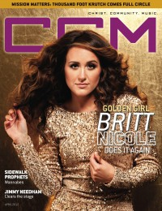

CMnexus
:
Contemporary Christian culture, music, and media.
Browse Magazines
Browse Profiles
cmnexus.org
CM
nexus
→
Profiles
→
N
Britt Nicole
On the cover

April 2012
CCM Digital
Media coverage:
Jan 2008 in
Ignite Your Faith
"I Want to Bring Hope", by
Steven Douglas Losey
Jul 2010 in
CCM Digital
"Mission Matters: Helping the Lost get Found", by
Adria Haley
Sep 2010 in
CCM Digital
"Unplugged: A pop princess goes au naturel", by
Emily Hoernschemeyer
Apr 2012 in
CCM Digital
"Golden Girl... Britt Nicole Does It Again", by
Caroline Lusk
15 Mar 2015 in
CCM Digital
"Life: Remixed"
15 Dec 2015 in
CCM Digital
"Concert Review: TOBYMAC Continues To Set The Standard For Christian Music's Live Show - Performs Poignant NYC Tour Date Hours After Paris Attacks", by
Justin Sarachik
15 Oct 2016 in
CCM Digital
"Stronger Together", by
Jen Rose Yokel
Albums & reviews:
2007
:
Say It
Jun 2007 in
CCM
, by
Meredith Ball
Nov 2007 in
Living With Teenagers
, by
Joy Fisher
2009
:
The Lost Get Found
Oct 2009 in
Worship Leader
, by
Greg Wallace
2010
:
Acoustic
Aug 2010 in
CCM Digital
, by
Andrew Greer
2012
:
Gold
May 2012 in
CCM Digital
, by
Grace S. Aspinwall
Mar 2013 in
CCM Digital
, by
Andy Argyrakis
2015
:
The Remixes
15 Mar 2015 in
CCM Digital
, by
Andy Argyrakis
May 2015 in
Worship Leader
, by
Mike Pueschell
2016
:
Britt Nicole
1 Oct 2016 in
CCM Digital
, by
Andy Argyrakis
Award Summary
(
Nominations
/
Wins
)
Dove Awards
2011 Dove Awards
Female Vocalist
2013 Dove Awards
Short Form Music Video
: "Eye On It"
Short Form Music Video
: "Gold"
Grammy Awards
2012 Grammy Awards
Best Contemporary Christian Music Album
:
Gold
CMnexus
(noun)
The magazine index
of modern music
and Christianity
© 2011 CMnexus. Last updated September 2019.
Contact:
Rants and other correspondence to:
editor -AT- cmnexus
-DØT- org
About